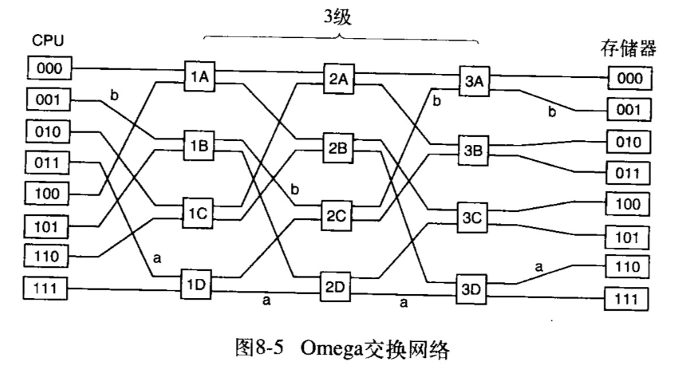
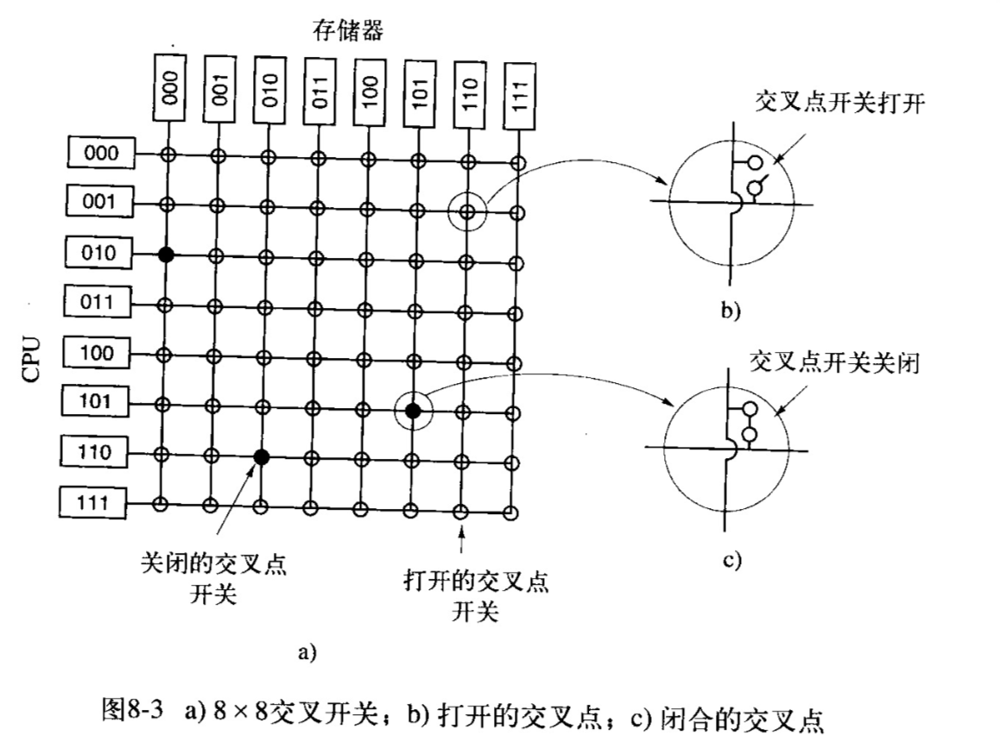

两个或更多的CPU全部共享访问一个公用的RAM
读出每个存储器字的速度是一样快的
基于单总线的多处理机，使用同一个总线通信，当cpu有几十个时，严重受到总线带宽的限制。 解决方案：为每个CPU添加一个高速缓存cache，许多读操作可以从高速缓存上得到满足，总线流量大大减少。
每一个高速缓存块被标记为只读（可同时存在于多个cache中）或标记为读写（不能在其他高速缓存中存在） 如果cpu试图在一个或多个远程高速缓存中写入一个字，总线硬件检测到写，并把一个信号放到总线上通知所有其他的高速缓存。如果其他高速缓存有个“干净“的副本，也就是同存储器内容完全一样的副本，那么它们可以丢弃该副本并让写者在修改之前从存储器取出高速缓存块。如果某些其他高速缓存有”脏“副本，它必须在处理写之前把数据写回存储器或者把它通过总线直接传送到写者上。


CPU可能共享高速缓存或者不共享，但都共享内存
特殊的硬件电路可以确保在一个字同时出现在两个或者多个的高速缓存中的情况下，当其中某个CPU修改了该字，所有其他高速缓存中的该字都会被自动的并且原子性的删除来确保一致性